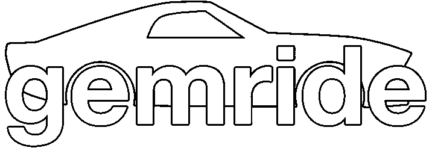

<mat-toolbar color="primary">
    <div class="hamburger" *ngIf="hamburgerIsVisible">
        <button
                type="button"
                aria-label="Toggle sidenav"
                mat-icon-button
                (click)="onClick()">
            <mat-icon aria-label="Side nav toggle icon">menu</mat-icon>
        </button>
    </div>
    <div class="hamburger2" *ngIf="hamburgerChatIsVisible">
        <button
                type="button"
                aria-label="Toggle sidenav"
                mat-icon-button
                (click)="onClick()">
            <mat-icon aria-label="Side nav toggle icon">chat</mat-icon>
        </button>
    </div>
    <span (click)="hamburgerOff()" (click)="hamburgerChatOff()">
        <a routerLink="/home">
            
        </a>
    </span>
    <span class="fill-remaining-space"></span>
    <button mat-button routerLink="/search" (click)="hamburgerOn()" (click)="hamburgerChatOff()">
        <div class="button">
            <mat-icon aria-label="user-settings">search</mat-icon>
        <div class="iconsOnly">Join group</div>
        </div>
    </button>
    <button mat-button routerLink="/create" (click)="hamburgerOff()" (click)="hamburgerChatOff()">
        <div class="button">
            <mat-icon aria-label="user-settings">group_add</mat-icon>
        <div class="iconsOnly">Create group</div>
        </div>
    </button>
    <button mat-button routerLink="/manage" (click)="hamburgerOff()" (click)="hamburgerChatOn()">
        <div class="button">
            <mat-icon aria-label="user-settings">settings</mat-icon>
        <div class="iconsOnly">Manage group</div>
        </div>
    </button>
    <button mat-icon-button routerLink="/login" (click)="hamburgerOff()" (click)="hamburgerChatOff()">
        <mat-icon>person</mat-icon>
    </button>
</mat-toolbar>
